User Access Management ensures the right users have appropriate access to systems, devices, applications, data and networks — a central directory for user biodata, permissions and accesses that streamlines onboarding and offboarding.
I oversee experience design for User Administration, Onboarding, Navigation, the Central Config framework and the Audit Service — all critical platform components. For this project I took charge of comprehensive research on application usage data, led sessions across teams, drove UX/UI design, and ran user validation and testing.
Administrative users at hospital orgs — creating users, assigning permissions and data access, keeping provisioning clean as teams change.
Innovaccer's customer-facing support — setting up tenants, helping admins configure the platform, and stepping in when access breaks.
The user creation form is a set of static attributes — the admin fills the same fields for every user, regardless of who is being created.
Permissions can be assigned only through roles — groups of permissions created by admins.
Only one role can be assigned. Need one more permission? Edit the role for everyone, or create a whole new role.
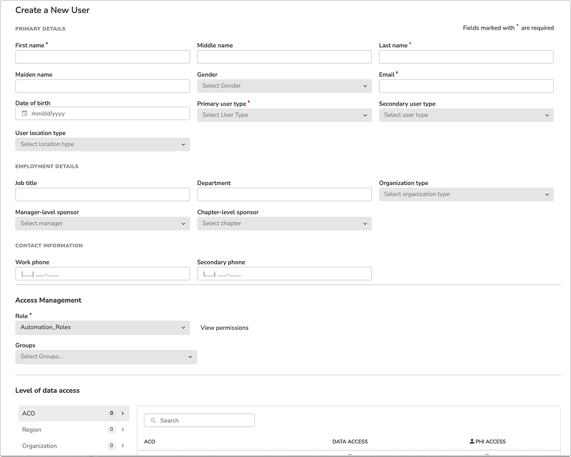
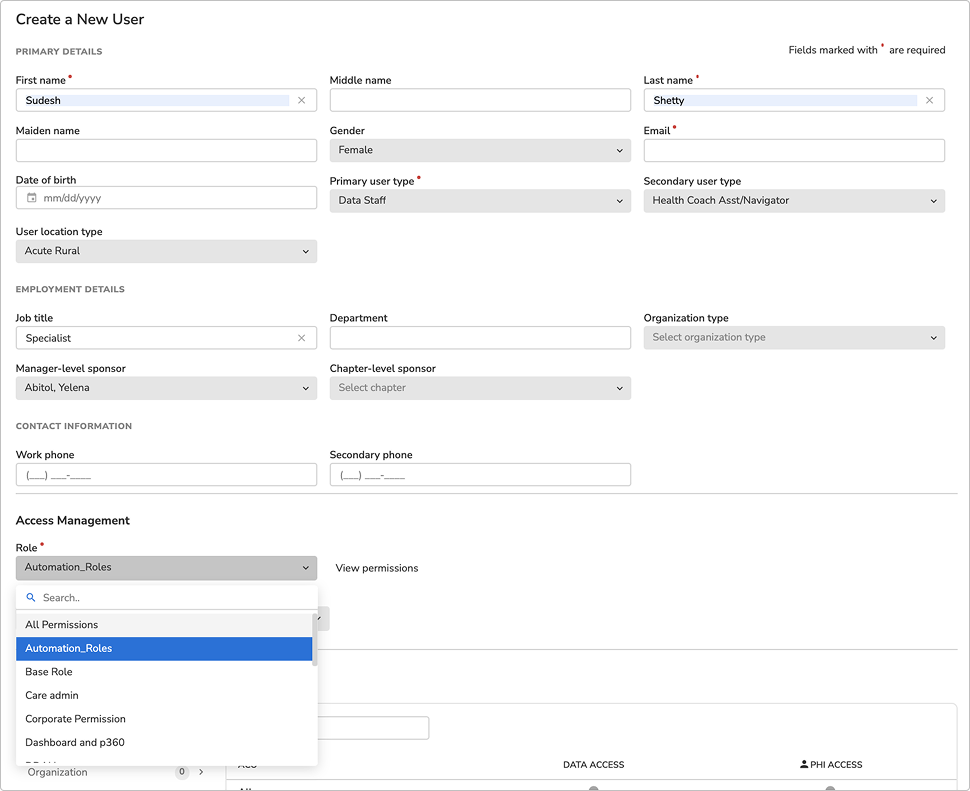
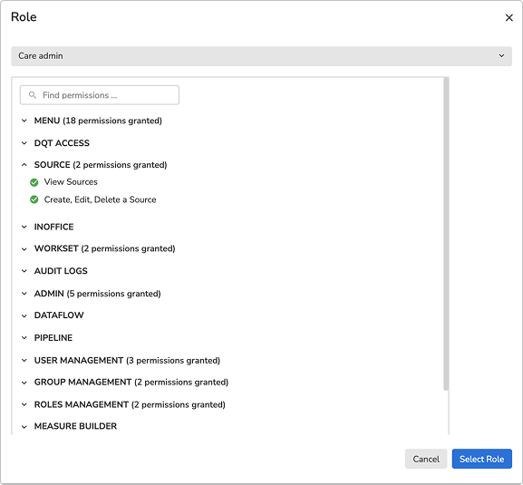
Satisfaction surveys and interviews kept surfacing the same pain: admins forced to create a new role every time a new user needed slightly different access — and instructed not to create many roles at the same time. A structural contradiction, straight from the users.
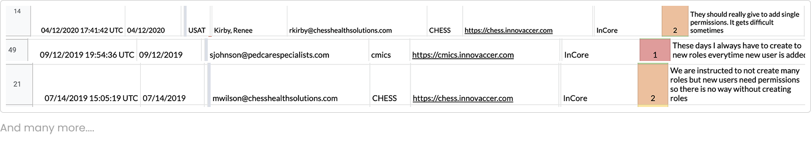
Pulling role counts per customer tenant confirmed it at scale — thousands of near-duplicate, single-use roles:
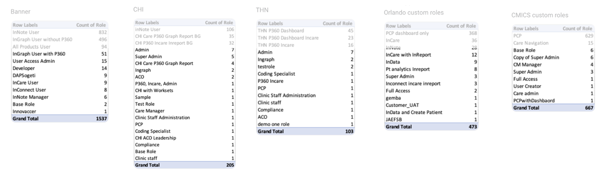
We benchmarked how mature platforms model access — dissecting their structures for roles, policies, permission sets and assignment levels:
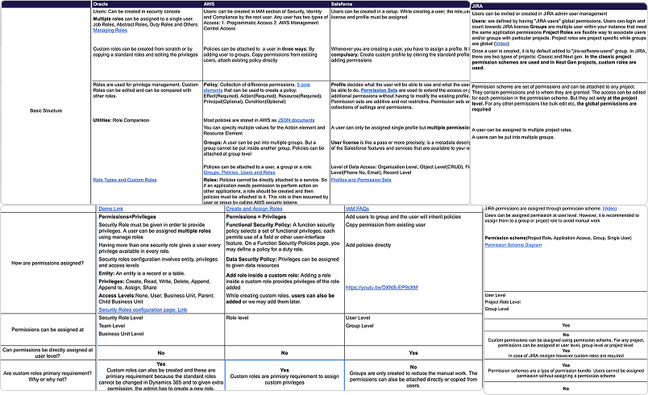
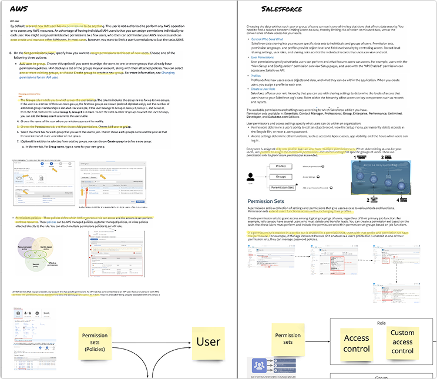
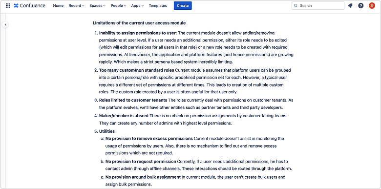
We wanted to establish users' identity in a robust way on our healthcare platform.
Multi-tenant architecture let us experiment without worrying about adoption yet.
We learned from our monolithic product — and could implement cleanly for new customers to test.
Between 2020 and 2021 we onboarded more customers than in the past three years combined.
We wanted a seamless experience for every new customer joining the platform.
We documented our findings and presented to stakeholders — VP Platform, VP Product, and engineering heads.
We introduced Role-Based Access Control. By creating platform roles, we streamlined the identity of users across the platform — every user, at every customer, now maps to a defined platform role with a defined permission ceiling.
Partner/third-party developers via self sign-up; auditors with read boundaries.
The healthcare personas actually using the applications.
Innovaccer customer support — helps PA set up the platform.
Creates PG, PD, PB users; assigns feature & data access; approves third-party apps.
Super-admin Innovaccer user. Auto-created; creates & manages PA and PAS-2.
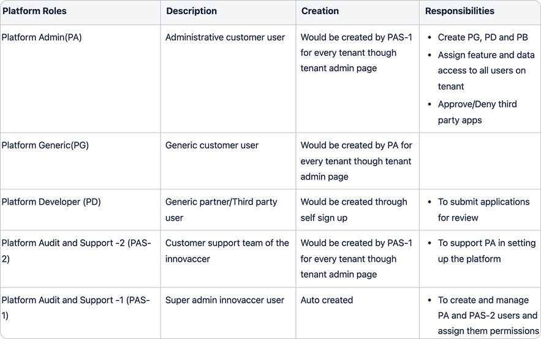
The key was to automate. The form carries a user-type attribute — close to a user's job role. Select it, and every relevant attribute populates; the admin adds only what's genuinely user-specific. The attribute-to-user-type mapping is defined by the applications themselves.
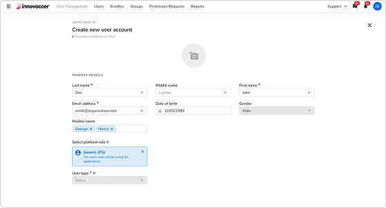
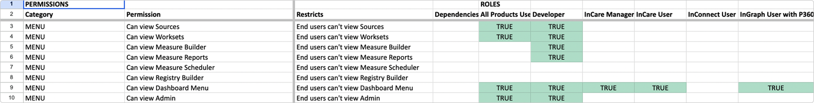
Roles were rigid; bundles are elastic. A bundle is a group of permissions an admin creates. While creating a user, an admin can assign a bundle directly, add singular permissions on top, or go fully independent if no bundle fits. An assigned bundle can be broken inside the creation form for customised changes — and permissions can be copied from an existing user.
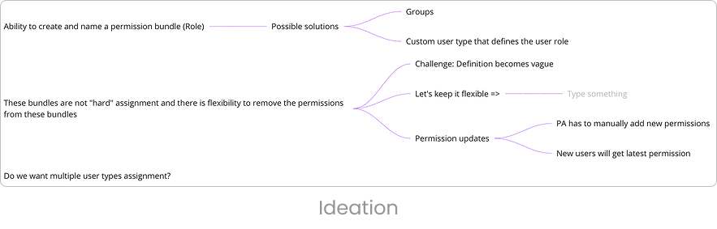
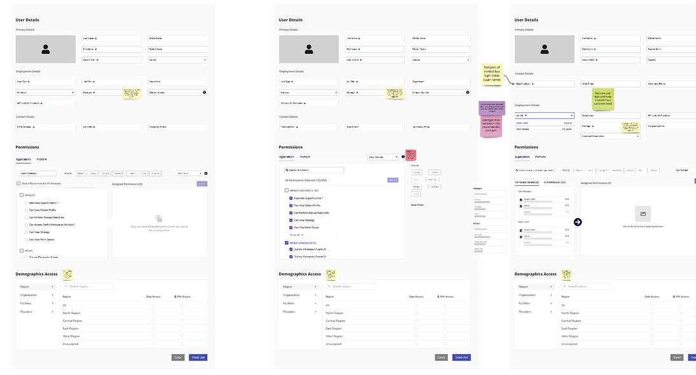
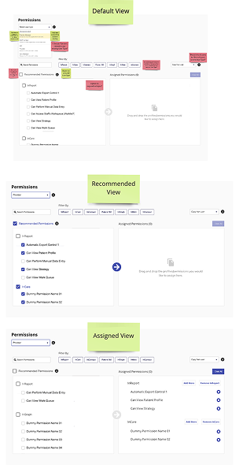
After many iterations we committed to the bucket design — a two-pane model where available bundles sit on the left and the user's assigned set builds up on the right. It's the most intuitive representation of "what this user can do," with the best visibility of information at a glance.
We took the solutions back to the same users who gave us the problems — moderated validation sessions across customers, with insights tagged and clustered in Dovetail.
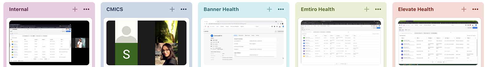
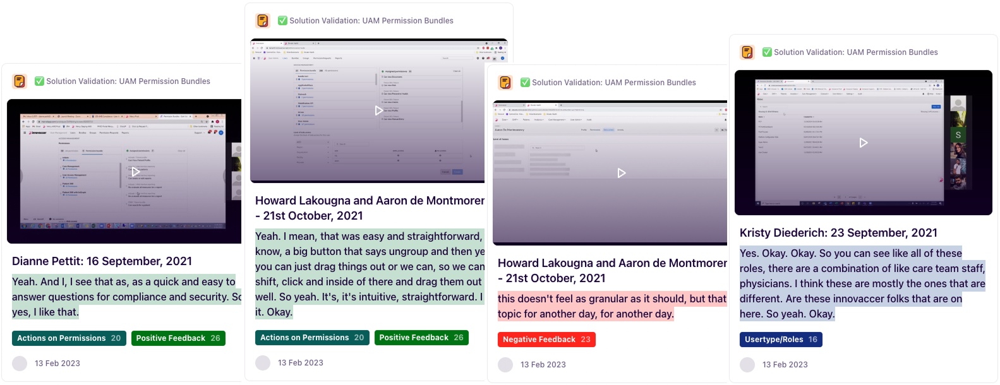
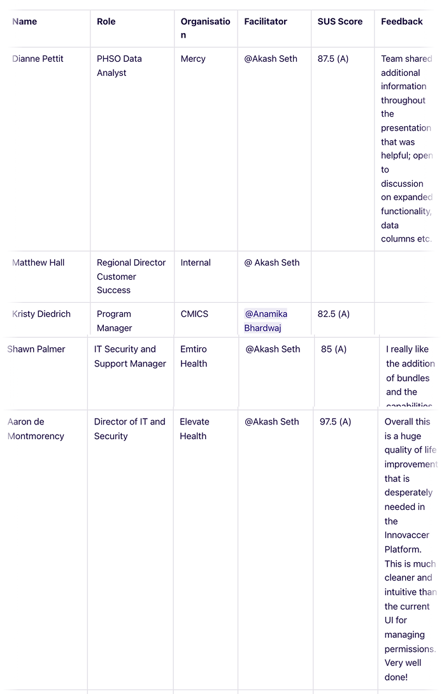
Grade A on the System Usability Scale. Overall response from users was good — "much cleaner and intuitive than the current UI for managing permissions. Very well done!"
None of this ships alone. One product manager, frontend and backend engineers, researchers and facilitators — aligned across US ↔ India, from problem evidence to Grade A validation.